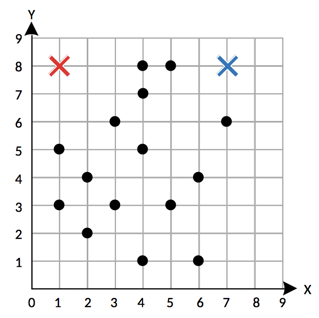
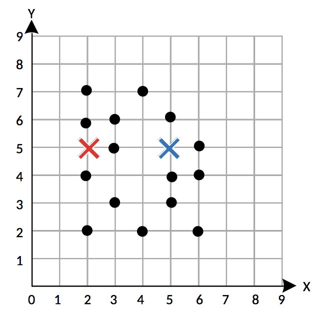
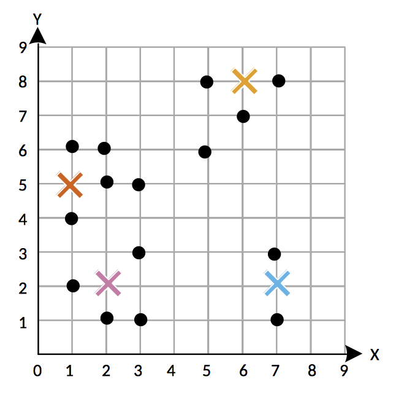

Use the k-means algorithm to create two clusters for the following set of points. The blue and red crosses determine the starting centroid location for each cluster. In this question, we will be using distance to determine whether or not two points are similar. Don't worry about how to calcluate distance– just look at the dots and assign it to the centroid that it is closest to. If a dot is the same distance from both centroids, assign the dot to the blue cluster.
Since the dots still belong to the same cluster after assigning each dot to its closest cluster, we can stop walking through the k-means algorithm.
Use the k-means algorithm to create two clusters for the following set of points. The blue and red crosses determine the starting centroid location for each cluster. In this question, we will be using distance to determine whether or not two points are similar. Don't worry about how to calcluate distance– just look at the dots and assign it to the centroid that it is closest to.
Since the dots still belong to the same cluster after assigning each dot to its closest cluster, we can stop walking through the k-means algorithm.
Use the k-means algorithm to create four clusters for the following set of points. The crosses determine the starting centroid location for each cluster. Don't worry about calculating the distance for each dot– just look at the dots and assign it to the centroid that it is closest to.
